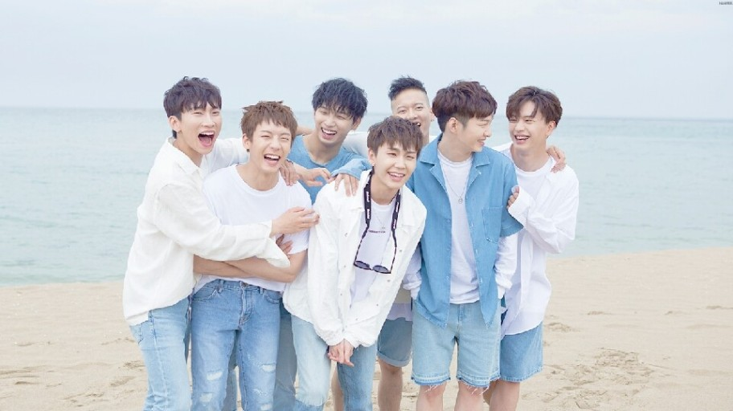

이 펭지는 비투비 정보에 관한 자료임!!!
이 펭지는 비투비 정보에 관한 자료임!!!비투비 사랑해!!~~
2012년 3월 21일에 데뷔한 대한민국의 6인조[5] 다국적 보이그룹. 큐브엔터테인먼트에서 비스트 이후 2년 5개월 만에 내놓은 팀이며, 팀명 BTOB는 같은 회사였던 G.NA가 Boys TO Voice라는 이름을 지어준 것에서 착안해 이것이 BTOB로 변형되었다. 'Born To Beat(비트를 위해 탄생했다)'의 철자를 적절히 조합한 것으로 '새로운 음악(비트)과 무대를 선보이기 위해 탄생했다'는 의미와 '이기다', '압도하다'는 뜻의 '음악으로 전 세계의 리스너들을 압도하기 위해 탄생했다'는 두 가지 의미가 담겨있다.